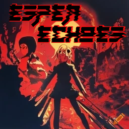
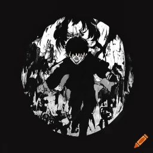

O Novo Mangá de Katsuhiro Otomo: "Esper Echoes"
Por Pedro Ernandio
O renomado mangaká Katsuhiro Otomo, conhecido mundialmente pela obra-prima cyberpunk "Akira", está supostamente trabalhando em um novo mangá intitulado "Esper Echoes". Baseado no filme britânico de 1964, "Children of the Damned", o novo projeto de Otomo promete mergulhar novamente no fascinante mundo dos poderes psíquicos e da paranormalidade.
O Legado de Akira e a Influência em Esper Echoes
"Akira", lançado originalmente em 1982, revolucionou a indústria de mangás e animes, trazendo uma narrativa complexa e visualmente impactante sobre um mundo futurista e distópico, onde crianças com habilidades psíquicas são armas de destruição em massa. Com "Esper Echoes", os fãs de Otomo estão curiosos sobre as possíveis conexões e inspirações que este novo trabalho pode ter com sua obra anterior.
Embora "Akira" e "Esper Echoes" compartilhem o tema central de poderes psíquicos, Otomo parece estar explorando novas direções e influências. "Children of the Damned", a base para "Esper Echoes", é um clássico do cinema de terror e ficção científica que aborda crianças com habilidades psíquicas superiores, criando um paralelo interessante com o universo de "Akira". No entanto, enquanto "Akira" se concentra em um cenário urbano caótico e em uma crítica social densa, "Esper Echoes" parece prometer uma abordagem mais introspectiva e enigmática, centrada no mistério e no suspense psicológico.
O Que Podemos Esperar de Esper Echoes
Os rumores sobre "Esper Echoes" indicam que Otomo está interessado em explorar a complexidade das relações humanas através da lente da paranormalidade. Espera-se que o mangá tenha uma atmosfera sombria e intrigante, refletindo o tom perturbador de "Children of the Damned". A narrativa poderá se aprofundar no desenvolvimento dos personagens e suas lutas internas, enquanto eles descobrem e lidam com seus poderes extraordinários.
Além disso, a arte de Otomo, sempre rica em detalhes e dinamismo, deverá trazer uma nova vida ao conceito de crianças psíquicas, com cenas visualmente impactantes que mesclam horror e beleza. A influência de "Children of the Damned" sugere que Otomo pode estar inclinado a uma abordagem mais minimalista e focada no terror psicológico, contrastando com a grandiosidade épica de "Akira".
A Relação Entre Akira e Esper Echoes: Continuidade ou Nova Perspectiva?
Embora "Esper Echoes" não seja uma continuação direta de "Akira", os temas compartilhados de poderes psíquicos e a exploração do potencial humano criam uma ligação espiritual entre as duas obras. Otomo pode estar usando "Esper Echoes" como uma plataforma para revisitar e expandir conceitos que ele apenas começou a explorar em "Akira". No entanto, ao invés de repetir fórmulas, Otomo provavelmente trará uma nova perspectiva, talvez mais madura e contemplativa.
Conclusão
"Esper Echoes" promete ser uma adição intrigante ao já impressionante portfólio de Katsuhiro Otomo. Ao combinar a atmosfera sinistra de "Children of the Damned" com sua própria habilidade única para criar mundos ricos e personagens complexos, Otomo está prestes a entregar outra obra-prima que tanto os novos leitores quanto os fãs de longa data de "Akira" podem ansiar. Como sempre, podemos esperar uma obra que não apenas entretém, mas também provoca reflexão e debate sobre os limites da mente humana e o impacto do poder em suas mãos.
Fique atento para mais atualizações sobre "Esper Echoes" e prepare-se para mergulhar em mais uma aventura psíquica magistralmente tecida por Katsuhiro Otomo.